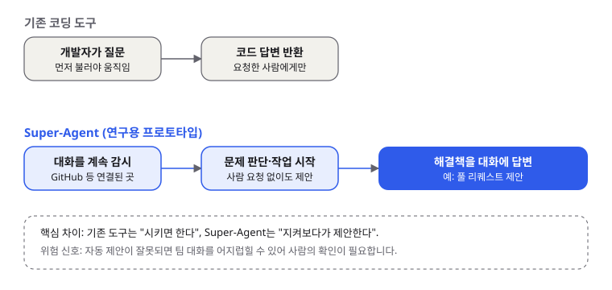
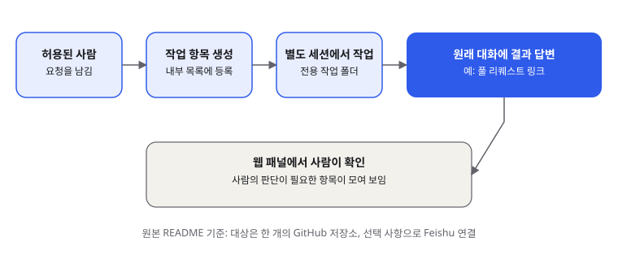

DeepSeek Super-Agent: 시키기 전에 먼저 제안하는 코딩 에이전트, 입문 개발자가 알아야 할 것
- 중국 DeepSeek이 2026년 11월 1일, 대화를 지켜보다가 먼저 코딩 문제를 제안하는 '감시형' 에이전트 Super-Agent 프로토타입을 오픈소스로 공개했습니다.
- 기존 코딩 도구는 사람이 불러야 움직이지만, Super-Agent는 연결된 대화에서 막힌 흔적을 찾아 작업 항목을 만들고 별도 세션에서 작업한 뒤 결과를 대화에 답합니다. 공식 저장소는 연구용 코드라고 명시했습니다.
- 입문 개발자에게 중요한 점은 '에이전트가 사람 없이 일하는 구조'를 직접 읽어 볼 수 있다는 것이고, 바로 운영 환경에 붙이기보다는 테스트용 저장소에서 먼저 실험하는 편이 안전합니다.
코딩 에이전트 시장은 지금 "누가 더 똑똑한가"보다 "언제 일을 시작하는가"를 두고 경쟁하는 모습입니다. 대부분의 도구는 개발자가 질문을 던져야 답하는데, DeepSeek은 이 순서를 뒤집은 프로토타입을 내놓았습니다. 팀 대화에서 문제를 알아채고 먼저 해결책을 내놓는다는 것이 핵심입니다.
01한눈에 보기
Super-Agent를 한 문장으로 말하면 '회의실 구석에서 대화를 듣고 있다가, 도울 일이 보이면 손을 드는 동료'입니다. 보통의 코딩 도구는 주문을 받아야 일하는 식당 직원에 가깝습니다. 반면 이 프로토타입은 주문이 없어도 테이블 상황을 보고 먼저 음식을 준비하려는 쪽에 가깝습니다. 다만 아무 대화에나 끼어드는 것은 아니고, 저장소 연결과 허용된 사람 같은 규칙 안에서 움직입니다.

· 풀 리퀘스트(Pull Request, PR): 코드 변경을 제안하고 동료가 검토한 뒤 합치는 GitHub의 요청 단위입니다.
· 하니스(harness): 모델을 감싸서 도구 호출, 기록, 실행 환경을 관리하는 바깥 틀입니다. 자동차로 치면 엔진이 아니라 운전석과 계기판에 해당합니다.
· 프로토타입: 완성품 전에 개념을 확인하려고 만든 시제품입니다.
02어떻게 동작하나요
공식 저장소 README는 동작을 네 단계로 설명합니다. 먼저 GitHub와 선택 사항인 Feishu(중국의 업무 메신저) 같은 곳을 듣고 있습니다. 그다음 허용된 사람이 작업을 요청하면, 이를 '작업 항목'으로 등록합니다. 세 번째로 그 항목을 자기만의 에이전트 세션과 작업 폴더에서 처리합니다. 마지막으로 원래 대화에 결과를 알려 주는데, 예시로 풀 리퀘스트를 든 것이 눈에 띕니다. 사람은 웹 패널에서 자신이 확인해야 할 항목을 한눈에 볼 수 있습니다.
여기서 중요한 점은 '먼저 말을 거는 에이전트'와 '허용된 요청만 처리하는 에이전트'가 한 시스템 안에 같이 들어 있다는 것입니다. 보도 기사들은 팀 채팅에서 막힌 대화를 스스로 찾아 해결책을 낸다고 강조했지만, 공식 README에 적힌 범위는 더 좁습니다. 기사 표현과 README 표현을 나란히 놓고 읽으면 과장과 실제 범위를 구분하기 쉽습니다. 비유하자면 같은 사무실에서 일하는 신입 사원이 회의를 듣다가 "이 부분은 제가 정리해 볼까요?"라고 말하되, 팀장이 허락한 업무 목록 안에서만 움직이는 것과 비슷합니다.

03왜 지금 화제인가요
DeepSeek은 8월에 이미 '하니스'라는 에이전트 실행 환경을 MIT 라이선스로 공개했고, 공개 몇 시간 만에 GitHub 스타가 3만 3천 개를 넘었다고 한국 매체가 전했습니다. 이번 Super-Agent는 그 틀 위에 올라가는 후속 프로토타입으로 소개됐습니다. 11월 1일에는 여러 매체가 "Claude Code와 Codex 같은 도구에 맞서는 자율형 코딩 에이전트"라는 제목으로 한꺼번에 보도했습니다.
04관련 나라·기업
| 구분 | 이름 | 어떤 관련이 있나 |
|---|---|---|
| 기업 | DeepSeek | Super-Agent 프로토타입과 하니스를 공개한 개발사입니다. 공식 저장소는 deepseek-ai 조직 아래에 있습니다 |
| 기업 | Anthropic | 기사에서 비교 대상으로 가장 많이 등장한 Claude Code의 개발사입니다. 하니스는 Claude Code를 선택형으로 연결할 수 있다고 알려졌습니다 |
| 기업 | OpenAI | 비교 대상인 Codex의 개발사입니다 |
| 나라 | 중국 | DeepSeek의 본사가 있는 나라입니다 |
05기존 방식과 무엇이 다른가
| 비교 항목 | 기존 코딩 도구 (Claude Code, Codex 등) | DeepSeek Super-Agent |
|---|---|---|
| 시작 방식 | 개발자가 질문하거나 명령을 줄 때 시작 | 연결된 대화에서 문제를 감지하면 시작 (공식 README는 허용된 사람의 요청을 기준으로 설명) |
| 대상 | 내 컴퓨터의 작업 폴더 | README 기준 GitHub 저장소 한 곳 (선택적으로 Feishu) |
| 결과 전달 | 내 화면에 바로 표시 | 원래 대화에 답변 (예: 풀 리퀘스트) |
| 사람의 역할 | 매 순간 지시하고 확인 | 웹 패널에서 사람이 필요한 항목만 확인 |
| 성숙도 | 정식 제품 | 연구용 프로토타입 (README 명시) |
06직접 해 보기
첫 걸음은 코드를 실행하기 전에 공식 저장소를 읽는 것입니다. 저장소 주소는 https://github.com/deepseek-ai/dsh-superagent-prototype이고, 라이선스는 MIT로 표기되어 있습니다. 실제로 받아 보고 싶다면 아래 명령으로 복제할 수 있습니다.
git clone https://github.com/deepseek-ai/dsh-superagent-prototype
cd dsh-superagent-prototypeREADME는 수동 설정보다 코딩 에이전트에게 설치를 맡기는 방식을 안내합니다. 저장소 안의 SETUP.md를 읽고 함께 설정해 달라는 문장을 그대로 써도 됩니다. 개발용 점검에는 아래 명령이 적혀 있는데, 타입 검사와 테스트, 빌드를 한 번에 돌립니다.
pnpm check처음 해 본다면 GitHub 계정이 있는 테스트 저장소를 하나 만들고, 그곳에서만 연결해 보세요. 실제 프로젝트 저장소에 바로 연결하면 원치 않는 제안이나 풀 리퀘스트가 팀에 노출될 수 있습니다. 모델 API 키가 필요한지, 어떤 모델을 쓰는지는 README 첫 화면에 명확히 적혀 있지 않아서 docs/006-deployment.md 같은 배포 문서를 함께 읽어야 합니다.
07주의할 점과 한계
- 공식 README는 이 저장소를 "연구 목적의 참고용 코드이며 DeepSeek의 공식 제품이 아니다"라고 밝혔습니다. 기사 제목에 쓰인 '출시'라는 말과 구분해서 읽어야 합니다.
- README는 운영 환경에서 쓰기 전에 검토와 수정을 거치라고 권합니다. 버그가 있을 수 있고 코드 스타일이 일관되지 않을 수 있다고도 적었습니다.
- 기사들은 "개발자 단체 채팅을 감시한다"고 보도했지만, 저장소 README는 GitHub와 선택적 Feishu를 기준으로 설명합니다. 어떤 대화를 얼마나 자동으로 읽는지는 직접 설정 파일을 확인해야 합니다. 팀 대화를 읽는 기능이므로 개인정보와 사내 보안 정책도 함께 검토해야 합니다.
- 자동 제안이 잘못되면 팀의 흐름을 방해할 수 있습니다. 사람이 최종 승인하는 단계를 두지 않는 구성은 권하지 않습니다.
- 라이선스 MIT는 상업적 이용을 넓게 허용하지만, 의존하는 외부 모델 API의 요금과 약관은 별도로 확인해야 합니다. 이 글에서는 API 요금을 확인하지 못했습니다.
08정리
Super-Agent가 흥미로운 이유는 코딩 도구의 역할이 '질문에 답하는 것'에서 '일이 생길 때 먼저 알아채는 것'으로 넓어지고 있다는 신호이기 때문입니다. 아직은 연구용 프로토타입이고, 기사에서 말하는 '자율성'과 공식 저장소가 설명하는 범위는 다릅니다. 그 차이를 읽어 내는 것 자체가 입문 개발자에게 좋은 연습이 됩니다.
오늘 해 볼 일은 두 가지입니다. 첫째, 저장소 README를 처음부터 끝까지 읽고 어떤 입력을 받고 어떤 결과를 내는지 메모해 보세요. 둘째, 테스트용 저장소에서만 연결해 보고, 제안이 나올 때 사람이 어떻게 확인하고 거부하는지 흐름을 직접 겪어 보세요. 에이전트를 믿는 기준은 발표 문구가 아니라 내 팀에서 실제로 맡겨도 되는지에 대한 경험에서 나옵니다.
09참고한 글
- deepseek-ai/dsh-superagent-prototype 저장소 README GitHub · 공식 저장소 (날짜 표기 없음)
- DeepSeek wants to steal Claude Code and Codex's lunch with an AI Super Agent that does not wait around Digital Trends · 2026.11.01
- DeepSeek Super-Agent: Open-Source Coding Assistant Launches emergent.sh · 2026.11.01
- 딥시크 하니스, 오픈소스 공개 후 스타 3만3000개 돌파…클로드 코드·코덱스도 위임 가능 위키트리 · 2026.08.15 (하니스 배경 설명용)
- DeepSeek Harness (dsh) first look Developers Digest · 2026.08.13 (하니스 배경 설명용)